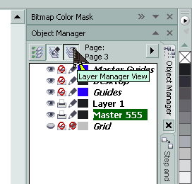
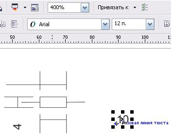

ВОПРОС / ОТВЕТ ДЛЯ НАЧИНАЮЩИХ
polzovatel-902 / 13.07.2010, 09:21/00:41
Форум:
Объясню на примере, чтоб было понятней... Открываю в кореле картинку (футболку с надписью) в формате JPG, мне нужно вытянуть из футболки надпись, т.е разъеденить файл... Говорят нужно формат изменить, еще что-то... Объясните, пожалуйста, что нужно сделать для этого...? Заранее спасибо.
mmgs, Solowejka, спасибо за идеи!
Да, с векторами в Word'e лучше, но для небольших иллюстраций пойдут и такие варианты
Des425,
Это вы о чем ? О мерцании указателя ? у меня ничего не изменилось от переключения языка.
FCSD,
добрый день, подскажите кто знает -
как в кореле создать мастер слой, чтобы он был под всеми страницами, а не накрывал их.
помоему начиная с 14 версии - мастера по умолчанию накрывают все слои.
ilyha, перенеси обычный слой выше Guides
Такое решение неудобно тем, что направляющие станут под объектами.
Есть способ поместить объекты мастер-слоя ниже объектов страниц, не затрагивая положение направляющих. Для этого в Диспетчере объектов (Object Manager) нажмите кнопку "Layer Manager View" (она вверху крайняя справа)

Затем перетащите мастер-слой ниже Layer 1 (или как он у вас там называется). В результате этого объекты мастер-слоя окажутся под объектами Layer 1 текущей страницы.
А нельзя ли изменить дефолтный кегль размерного шрифта (в размерных линиях)?
И ещё вопрос - проблему с решёткой в русифицированной CorelDRAW 12 вместо числа в размерных линиях так не решили в своё время?
Herozero, ничего не понял!
Des425, ну размер шрифта в размерной линии идёт 24, приходится каждый раз уменьшать после простановки.
2) В CorelDraw12 Кореле вместо размера # ставится, писали, что это неисправимый глюк появляется после русификации
PS: с первым вопросом вроде разобрался - нужно, не выделяя ничего, установить размер фигурного текста. Только вот при малых размерах обозначение далеко в сторону выносится (базовая линия текста)
Страницы